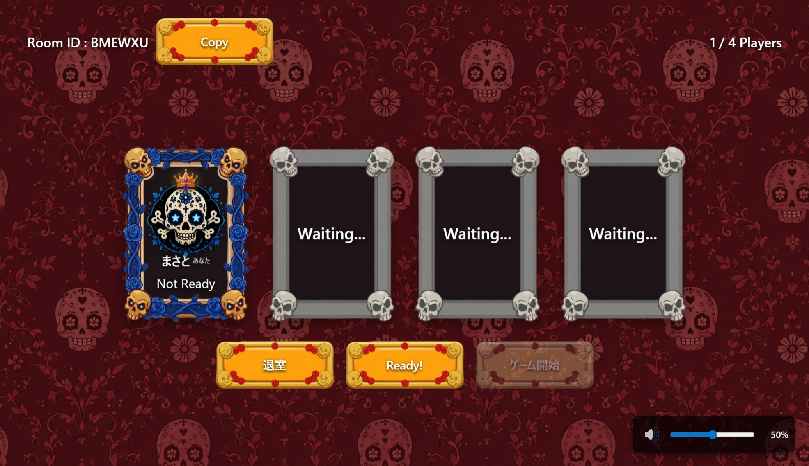
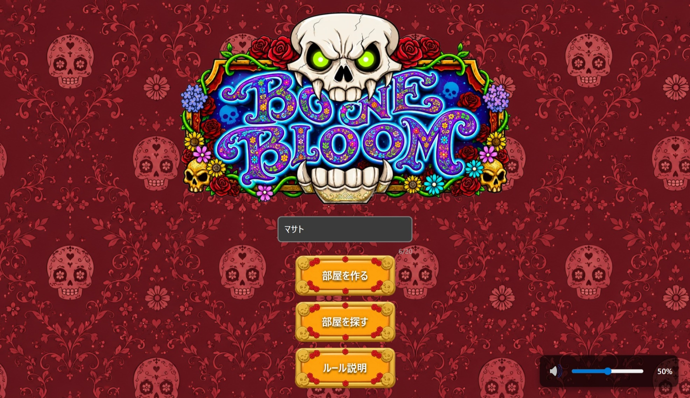
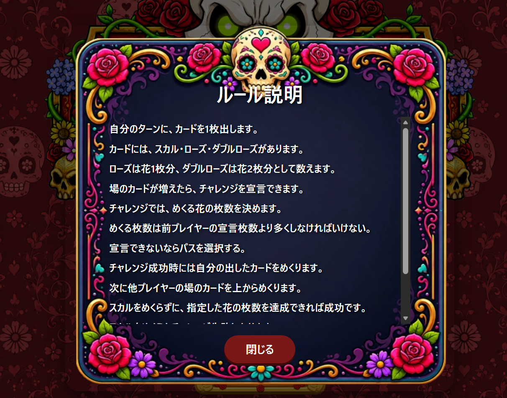
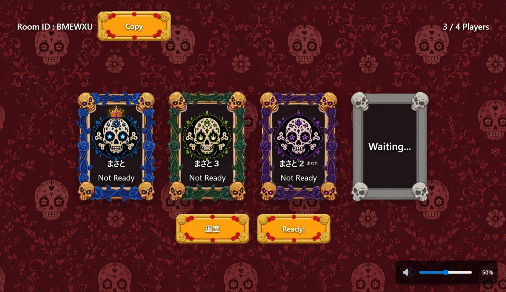

担当したこと
主にタイトルページ、ロビー画面、リザルト画面の作成を担当しました。 タイトル画面では、ゲーム開始前から世界観に入り込めるように、ロゴ・背景・入力欄・ボタンの配置を整えました。 ロビー画面では、部屋ID、参加人数、Ready状態、待機枠を一目で確認できるようにし、入室後に必要な操作が分かりやすい画面構成にしました。 リザルト画面では、勝者がすぐ分かる演出と、次の行動へ進みやすい導線を実装しました。
Page-by-page Highlights
ページごとの工夫点
矢印ではなく、各画面の右側に工夫点を並べて、見やすく整理しています。

01 / Title Page
タイトルページ
名前を入れていない状態では部屋作成・検索に進めないようにし、入力漏れによるエラーを防ぎました。
別ページへ移動せずにルールを確認できるため、初めて遊ぶ人でも流れを止めずに理解できます。

ボタンを押したときに音が鳴るようにし、音量の大きさに応じてUIも変化するようにしました。

02 / Lobby Page
ロビー画面①
招待・共有に必要な情報を左上に配置し、参加者へすぐ共有できるようにしました。
現在の参加人数と最大人数を表示し、あと何人入れるかが一目で分かるようにしました。
ロビーに入ったことが画面上でも分かるようにし、参加した実感が出る演出を加えました。
枠内のアイコンや色で、誰がどのプレイヤーか識別しやすいUIにしました。
03 / Lobby Operation
ロビー画面②
部屋IDをすぐコピーできるようにし、招待の手間を減らしました。
各プレイヤーの状態が確認しやすく、ゲーム開始までの流れが分かるようにしました。
ホストだけが開始できるようにして、参加者が誤ってゲームを開始しないようにしました。
右下の音量ボタンとスライダーで、いつでも音量を調整できるようにしました。
04 / Result Page
リザルト画面
勝者が瞬時に分かるよう、画面上部に大きく表示して達成感を出しました。
誰が勝ったかを迷わず認識できるよう、結果情報を中央に集約しました。
「もう一度遊ぶ」「部屋を出る」を下部に並べ、結果確認後の導線を明確にしました。
自動遷移のタイミングを表示し、ユーザーが次の画面遷移を予測できるようにしました。